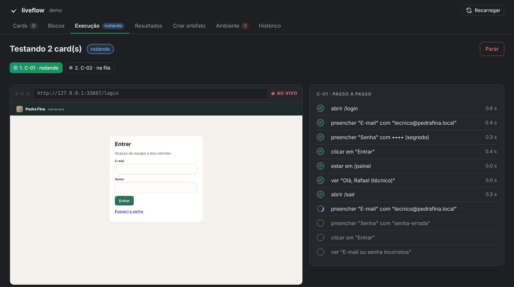
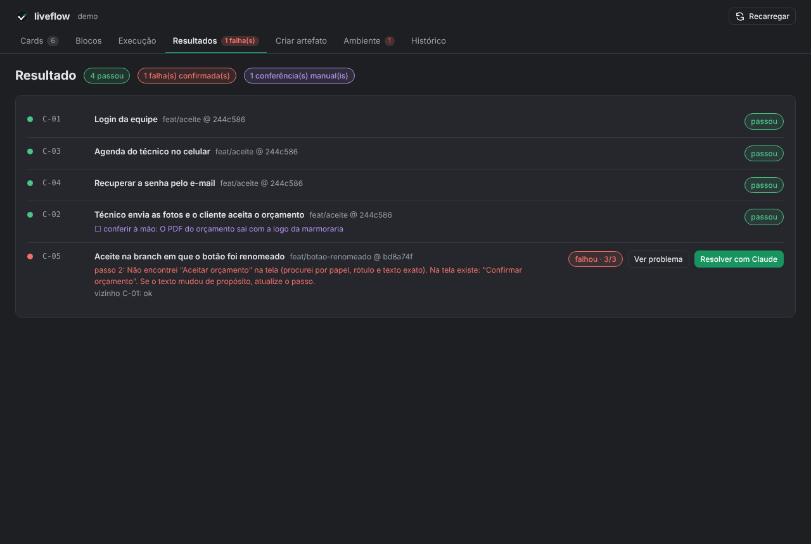
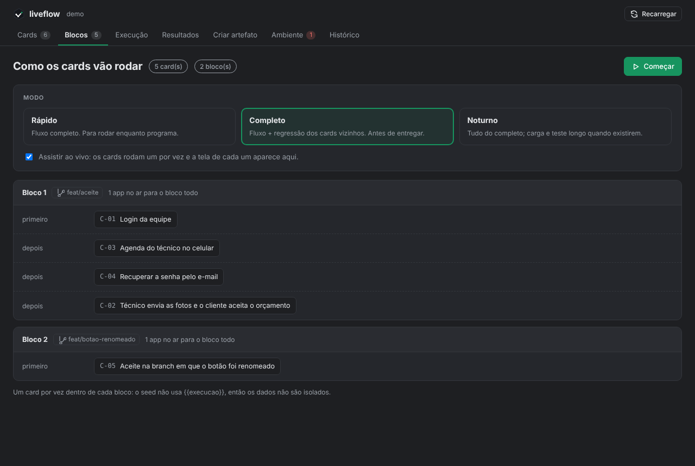

Cada card testado na tela, antes de entregar.
O liveflow abre o sistema na branch do card e segue o passo a passo, clique por clique, sempre do mesmo jeito. Você assiste ao vivo no VS Code e sabe exatamente qual passo falhou.
Grátis e de código aberto (MIT). Também roda pelo terminal e no CI.
- abrir /orcamentos/1042
- ver "Total R$ 4.380,00"critério 1
- clicar em "Aceitar orçamento"
- ver "Orçamento aprovado"critério 2
- receber o e-mail de confirmaçãocritério 3
A IA escreve os passos. O liveflow executa.
Nada de teste que muda de resultado sozinho: quem roda é o liveflow, sem IA, e sempre do mesmo jeito. O Claude só escreve.
Você passa os seus cards
Cole os cards do seu quadro: título, critérios e a branch onde foram feitos. O liveflow levanta o projeto sozinho (repositórios, scripts, tecnologias).
O Claude escreve o artefato
Ele lê o código e escreve .liveflow/cards.yaml: como subir o sistema e o passo a passo de cada card, com os textos reais da tela.
O liveflow testa, card por card
Sobe o sistema na branch de cada card, zera o banco e segue os passos. Falha só conta depois de 3 de 3 tentativas.
# .liveflow/cards.yaml cards: - id: C-07 titulo: Cliente aceita o orçamento pelo link branch: feat/aceite criterios: - O cliente vê o valor total - Ao aceitar, o orçamento fica aprovado como_testar: - abrir: /orcamentos/1042 - ver_texto: "Total R$ 4.380,00" criterio: 1 - clicar: Aceitar orçamento - ver_texto: Orçamento aprovado criterio: 2
Você assiste o teste acontecer.
Com vários cards, eles rodam um por vez, e a tela de cada um aparece no painel do VS Code. Quando um passo falha, você vê o print, o critério que caiu e os botões parecidos que existem na tela.



O que o liveflow garante.
Um resultado só vale se dá para confiar nele. Por isso algumas regras não mudam.
Instalar.
Escolha por onde usar. Os três falam com o mesmo artefato.
VS Code
A extensão com as telas: cards, blocos, execução ao vivo, resultados e o cofre de segredos.
Terminal e CI
A CLI no projeto, para rodar os cards da branch antes do push ou no pull request.
Claude Code
O plugin ensina o Claude a escrever o artefato e a corrigir o que falhou, sem nunca rodar o teste ele mesmo.
Precisa de Node 22.18 ou mais novo e do Playwright no projeto testado. Sem o Chromium do Playwright, o liveflow usa o Google Chrome instalado. Prefere instalar à mão? Baixe o .vsix da última versão.